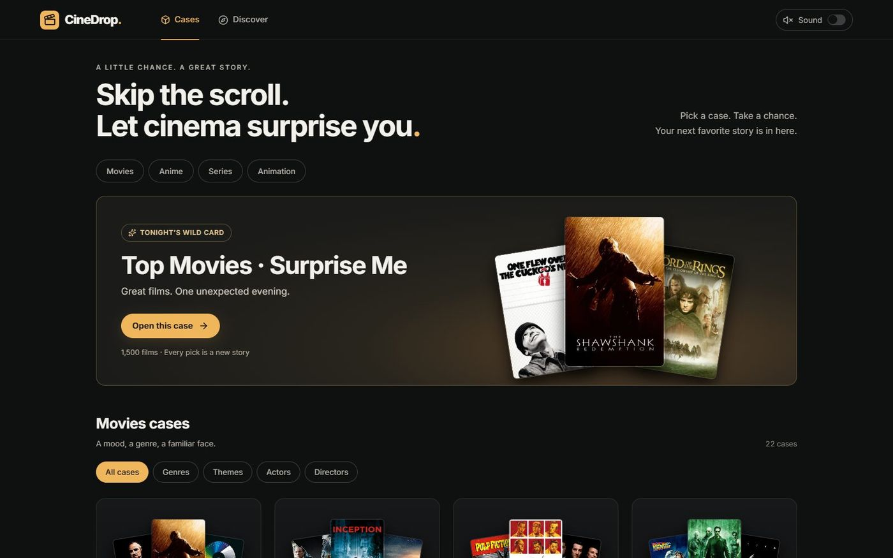
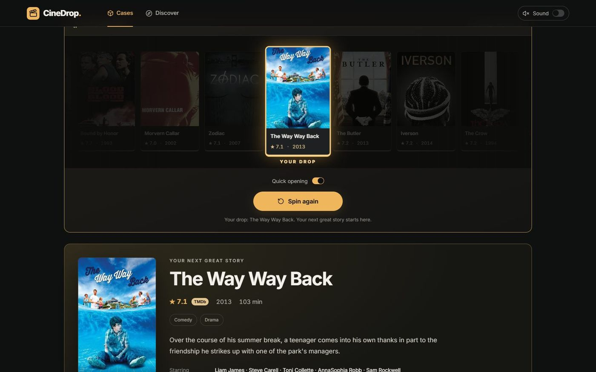
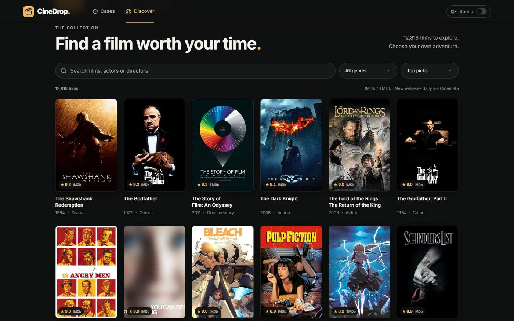

CineDrop
Can't decide what to watch? Pick a themed case, spin the reel, and CineDrop picks your next film, series or anime.
Keine Idee, was du schauen sollst? Eine Themenbox wählen, die Filmrolle drehen, und CineDrop bestimmt den nächsten Film, die nächste Serie oder den nächsten Anime.



What it doesFunktionsumfang
- 43 themed cases for movies, series, anime and animation, from genres and decades to actor and director ensembles. Every case cover is a fan of real posters from that case.
- The reel picks a title before it starts spinning, then stops exactly on it. Quick opening, Skip animation, optional sound and reduced-motion support are built in.
- Discover more than 12,800 films by title, actor or director, with genre filters and sorting. New releases are added automatically every day.
- 13,000 series from TVmaze with IMDb ratings, and anime from AniList that only lists titles that have actually aired.
- 43 Themenboxen für Filme, Serien, Anime und Animation, von Genres und Jahrzehnten bis zu Schauspieler- und Regie-Ensembles. Jede Box zeigt echte Poster aus ihrem Inhalt.
- Die Filmrolle wählt den Titel vor der Animation und stoppt genau darauf. Schnellmodus, Animation überspringen, Ton und reduzierte Bewegung sind eingebaut.
- Discover durchsucht über 12.800 Filme nach Titel, Darsteller oder Regie, mit Genrefilter und Sortierung. Neuerscheinungen kommen täglich automatisch dazu.
- 13.000 Serien aus TVmaze mit IMDb-Bewertungen und Anime aus AniList, wobei nur bereits ausgestrahlte Titel erscheinen.
How it worksArchitektur
A Next.js 16 app on Vercel. Bundled JSON catalogs feed the films and the cases. Server routes search the catalog, merge new releases from Stremio Cinemeta once a day, and normalize TVmaze and AniList responses with bounded caching and a saved fallback when a service is down.
Eine Next.js-16-App auf Vercel. Gebündelte JSON-Kataloge versorgen Filme und Themenboxen. Serverrouten durchsuchen den Katalog, ergänzen einmal täglich Neuerscheinungen aus Stremio Cinemeta und normalisieren TVmaze- und AniList-Antworten mit begrenztem Cache und einer gespeicherten Auswahl, falls ein Dienst ausfällt.
HighlightsEntscheidungen
- Data quality: an audit of all 12,759 films against Cinemeta found 93 posters showing a different title (TV mini-series mapped to unrelated films). A script now fixes them, and a test keeps the fix in place.
- Fair draw: the winner is chosen with the Web Crypto API before the animation, independently of image hosts; the reel never shows the winner next to itself.
- Fresh catalogs without redeploys: new films arrive daily at runtime; series and cases are rebuilt by reproducible scripts.
- Maintainable code: modular CSS on design tokens, Prettier, ESLint with zero errors and regression tests for the draw and the catalog.
- Datenqualität: Ein Abgleich aller 12.759 Filme mit Cinemeta fand 93 Poster, die einen anderen Titel zeigten (TV-Miniserien, die falschen Filmen zugeordnet waren). Ein Skript korrigiert sie jetzt, ein Test sichert die Korrektur ab.
- Faire Auswahl: Der Titel wird vor der Animation mit der Web Crypto API gewählt, unabhängig von Bildhosts; derselbe Titel steht nie direkt daneben.
- Aktuelle Kataloge ohne neues Deployment: Neue Filme kommen täglich zur Laufzeit dazu; Serien und Themenboxen bauen reproduzierbare Skripte neu auf.
- Wartbarer Code: modulares CSS mit Design-Tokens, Prettier, ESLint ohne Fehler und Regressionstests für Auswahl und Katalog.
Tech stackTechnologien
- Framework
- Next.js 16 (App Router), React 19, TypeScript
- UI
- Tailwind CSS 4, shadcn/ui, Inter, Lucide icons
- DataDaten
- TMDb datasets, Stremio Cinemeta, TVmaze, AniList
- QualityQualität
- node:test, ESLint, Prettier
- Hosting
- Vercel
ScopeProjektgrenzen
A personal project with a public demo. It does not stream films, process payments or award prizes. External data and image services can be unavailable; every rating shows its source and snapshot date.
Eigenes Projekt mit öffentlicher Demo. Kein Filmstreaming, keine Zahlungen, keine Gewinne. Externe Daten- und Bilddienste können ausfallen; jede Bewertung zeigt Quelle und Datum.
The source code is private. I'm happy to walk through it in an interview or a call.
Der Quellcode ist privat. Gern zeige ich ihn in einem Gespräch oder Call.